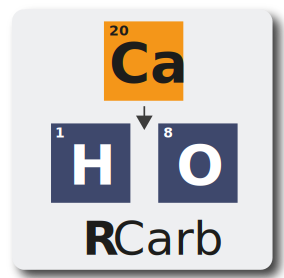

The package provides a dose rate modelling for carbonate-rich samples in the context of trapped charged dating (e.g., luminescence dating) applications.

Funding
Between 2018-2019, the work of Sebastian Kreutzer as maintainer of the package was supported by LabEx LaScArBxSK (ANR - n. ANR-10-LABX-52).
From 2020, Sebastian Kreutzer received funding from the European Union’s Horizon 2020 research and innovation programme under the Marie Skłodowska-Curie grant agreement No 844457 (project: CREDit).
Kreutzer, S., Mauz, B., Martin, L., Mercier, N., 2019. “RCarb”: Dose Rate Modelling of Carbonate-Rich Samples - an Implementation of Carb in R -. Ancient TL 37, 1–8.
This package bases on a 'MATLAB' programme with name 'Carb', details can be found the
following references:
Mauz, B., Hoffmann, D., 2014. What to do when carbonate replaced water: Carb, the model for estimating the dose rate of carbonate-rich samples. Ancient TL 32, 24-32. http://ancienttl.org/ATL_32-2_2014/ATL_32-2_Mauz_p24-32.pdf
Nathan, R.P., Mauz, B., 2008. On the dose-rate estimate of carbonate-rich sediments for trapped charge dating. Radiation Measurements 43, 14-25. doi: 10.1016/j.radmeas.2007.12.012
Further reading
Nathan, R.P., 2010. Numerical modelling of environmental dose rate and its application to trapped-charge dating. DPhil thesis, St Hugh's College, Oxford. https://ora.ox.ac.uk/objects/ora:6421